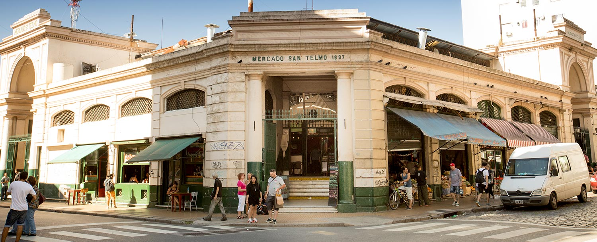
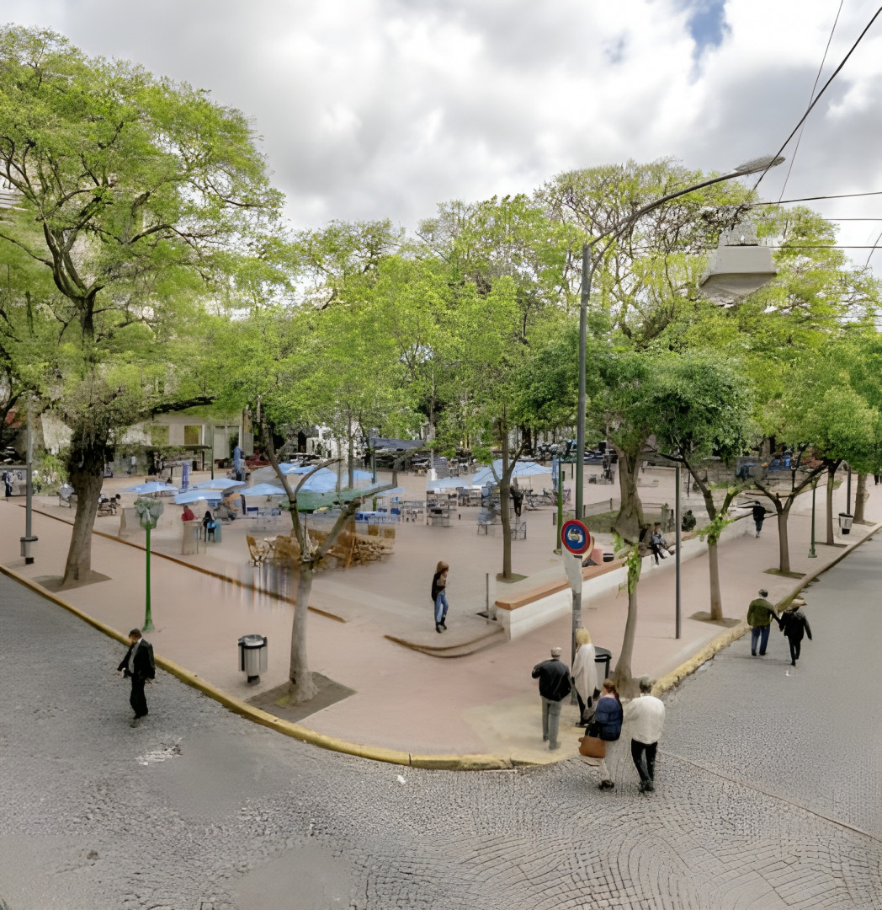
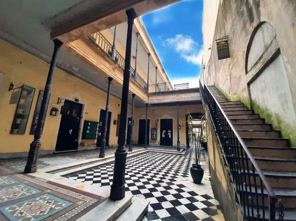

🏛 Atracciones de San Telmo
Descubre los principales atractivos turísticos del barrio histórico:

Mercado de San Telmo
Mercado tradicional lleno de tiendas de antigüedades, libros y artesanías. Un lugar perfecto para explorar la cultura local y encontrar souvenirs únicos.

Plaza Dorrego
Corazón del barrio donde se reúnen artistas y músicos. Los domingos se convierte en una feria de arte callejero con ambiente vibrante y bohemio.

Pasaje Defensa
Pintoresco pasaje con galerías de arte, cafés y tiendas independientes. Un sitio ideal para sumergirse en el ambiente artístico y cultural de San Telmo.